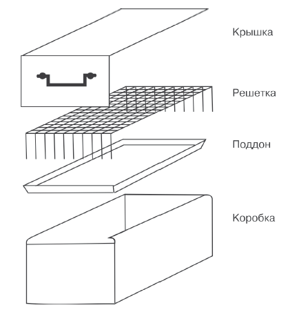
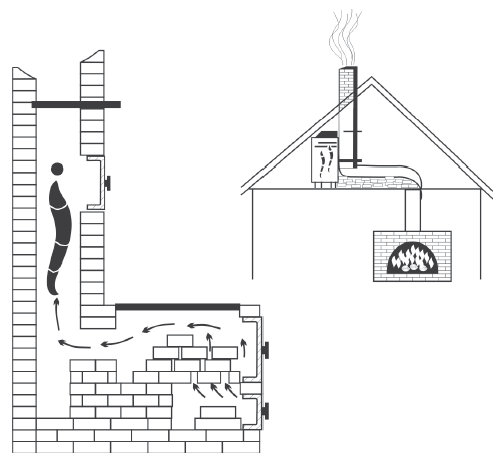
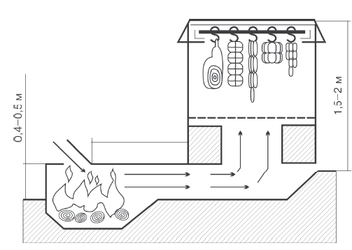

Коптильни и топливо

Для любительского копчения можно соорудить самые разнообразные коптильни, но при этом необходимо соблюдать правила пожарной безопасности. Остановимся на конструкциях самых простых коптилен, которые может устроить любой желающий.
Сооружая простейшую коптильню, топку устраивают в земле. Выкапывают яму с уступом, чтобы удобно было класть дрова. Над топкой делают перекрытие из жести с трубой-дымоходом, по которой дым будет поступать в коптильню. Для устройства самой коптильни можно использовать деревянный ящик или железную бочку, крышка должна быть с отверстием для выхода дыма, внутри оборудуют вешалки для тушек. В топку укладывают мелко нарубленные дрова и засыпают их опилками или ветками можжевельника с ягодами, листьями мяты. Дрова поджигают из поддувала. Опилки или листья можжевельника должны тлеть, а не гореть, создавая много холодного дыма.
Еще одна довольно простая коптильня – это обычное ведро из стали, в которое помещены две решетки: одна – на расстоянии 10 см от верхней кромки, а вторая – на 5 см выше нее.

Разборная коптильня
На дно ведра насыпают ольховые стружки, опилки или мелкие веточки. Ведро накрывают крышкой и ставят на подставку, установленную над горящим костром. При нагревании дна ольха начинает тлеть и появляется дым, необходимый для копчения. Заметим, что такая коптильня пригодна лишь для горячего копчения продуктов.
Следующий вариант коптильни легко соорудить из двух-трех бочек без дна, поставленных одна на другую.
Между ними натягивают фильтр – мокрую серпянку или редкую мешковину для очистки дыма от сажи. В нижней бочке делают топку, где на стальном листе сжигают дрова с опилками. На верхней бочке укладывают «вешала» с мясными продуктами. Сверху все сооружение накрывают мешковиной, которой и регулируют количество дыма и его температуру. Дрова и опилки в печи должны непрерывно тлеть. Горение дров при этом недопустимо.
Для быстрого копчения окороков, не предназначенных для хранения, температуру поднимают до 50–60 °C. В этом случае продолжительность копчения сокращается до 12—
14 часов. Корейки, грудинки, рулеты и мелкие части туши также коптят, подвешивая на шпагате. Продолжительность их копчения составляет примерно треть или половину времени копчения окороков. При любом копчении необходима выдержка копченостей в холодном помещении для диффузии коптильных компонентов внутрь кусков. Если окорока, корейки, рулеты не были зашиты в марлю (ткань), то после копчения их поверхность следует слегка обмыть в холодной воде, применяя щетку.
В домашних условиях коптить мясные продукты можно непосредственно в дымоходной трубе (на чердаке), в которую встраивают «вешала» для тушек и заслонки для регулирования концентрации дыма.
Коптильня в печиЕсли в доме есть печь, то ее можно реконструировать в коптильню. Для этого немного ниже шибера (задвижки) выбивают кирпич, чтобы вмонтировать печную дверцу, а в стене дымохода вставляют прут для подвешивания продуктов.

Коптильня в дымоходной трубе
Колбасу, мясо, птицу или рыбу натирают солью, подвешивают на прут, закрывают дверцу. На колосники в топочном отделении кладут кирпичи, чтобы дым, проходя сквозь них из поддувала, где поджигают дрова, остывал. Тягу регулируют шибером. Используют дрова только из деревьев лиственных пород. При таком способе копчения продукты будут готовы в течение 1–2 суток.
Коптильня на чердакеДелается в виде шкафа размером 1x1 м из кирпича или досок, обитых железом, с дверью высотой 1,5–2 м. Коптильня должна примыкать непосредственно к дымоходной трубе и соединяться с ней отверстиями вверху и внизу. Через нижнее отверстие дым из перекрытой заслонкой трубы входит в коптильню, а через верхнее отверстие выходит. В таком шкафу удобно размещать тушки и с помощью заслонок регулировать условия копчения.
Кухонная коптильняТакая коптильня, удобная и несложная в изготовлении и обслуживании, приспособлена для газовой или электрической плиты в городской квартире. В камеру копчения можно поместить 3–3,5 кг рыбы или до 4 кг мясных продуктов. Конструкция рассчитана для двух конфорок, однако в зависимости от потребности семьи можно изготовить коптильню применительно к одной или четырем конфоркам. Дымогенератор соединяется шлангом с охладителем дыма. В свою очередь охладитель, тоже шлангами, сообщается с коптильней и водой для охлаждения дыма. Коптильня через шланг соединяется с вентиляционной решеткой (кухонная вентиляция) для выхода дыма. Для холодного копчения используется одна конфорка, на другой стоит охладитель дыма, а на нем коптильня. Для горячего копчения используются две конфорки, в процессе копчения задействована только коптильня.
Разборная портативная коптильняТакая коптильня изготавливается из листовой жаропрочной стали толщиной 1–1,2 мм и стальной проволоки. В разобранном положении ее размеры – 6x30x50 см. Донышко – самая сложная деталь. Оно сделано из стального листа размером 36x50 см, три ребра жесткости предохраняют донышко от деформации при нагревании. С помощью четырех угольников длиной 40 и 27 см устанавливают торцевые и боковые стенки диаметром 4–5 мм. Крышка – это то же донышко, но без угольников. При желании к ней можно прикрепить ручку.
Боковые кромки торцевой стенки отгибают под прямым углом на 25 мм, в верхнюю кромку закатывают стержень диаметром 3 мм (для жесткости). На краях боковых стенок с помощью заклепок прикрепляют два зажима для соединения с торцевыми стенками. В верхнюю кромку также закатывают для жесткости стержень диаметром 3 мм. Стойка решетки имеет П-образную форму и сделана из проволоки диаметром 5 мм. К каждой стойке приваривают по шесть дужек для фиксации в них решеток. Верхний край стойки отгибают на 20 мм. Все острые кромки тщательно зачищают.
Собирают коптильню следующим образом: укладывают донышко на землю, устанавливают торцевые стенки, вставляют боковые стенки. Боковые стенки необходимо ставить без перекосов с достаточным усилием сверху вниз. Зажим боковой стенки скользит по отогнутой кромке торцевой стенки. Нижняя кромка должна плотно войти в зазор донышка. После установки боковых стенок короб размером 28,5x30x50 см приобретет жесткость. Все детали надежно соединяются друг с другом. Сборка решеток не представляет каких-либо трудностей.
На дно коптильни плотно (в два слоя) укладывают сырые расколотые поленья ивняка, очищенного от коры, или гнилушки. Решетки с подготовленной рыбой или кусками мяса устанавливают в коптильню и плотно закрывают ее крышкой. Коптильня должна находиться над поверхностью земли на высоте 20–25 см. Для этого можно изготовить специальные штыри, но проще воспользоваться камнями. Под коптильней разводят костер. Пламя должно быть сильным, так как на медленном огне продукты сохнут, а не коптятся. Копчение начинается, как только появляется насыщенный дым из-под крышки. Когда прогорит первая порция дров (через 30–40 минут), необходимо приоткрыть крышку (лучше лезвием топора). Если продукты готовы, отбрасывают крышку и быстро вынимают каркас решеток. Остатки гнилушек или тальника немедленно удаляют, перевернув коптильню, так как они при доступе воздуха сразу же воспламеняются. Коптильню разбирают, очищают от сажи, все детали укладывают в донышко и прикрывают крышкой.
Походная коптильняКак правило, такую коптильню используют для копчения рыбы. В обрывистом берегу прорывают нору длиной около метра. В конце ее выводят наружу трубу из кусков дерна – шириной 40 см и высотой 60 см.

Подземная коптильня
Когда это нехитрое устройство готово, вымытую, выпотрошенную мелкую рыбу – подлещик, густеру, плотву, окуньков – подсаливают и нанизывают на куски проволоки так, чтобы рыбки не касались друг друга.
Проволоку с рыбой вставляют в трубу. Верх трубы для регулирования тяги прикрывают куском фанеры, а если не найдется такой – мешковиной. В норе разводят небольшой, но дымный костерок. Самое подходящее топливо для такого костра – ольха: дым от нее придает рыбе золотистый оттенок, и она не будет горчить.
Коптильня в холодильникеДля копчения мяса в домашних условиях можно использовать корпус старого холодильника с плотно прилегающей дверью, предварительно вынув из него все содержимое и морозильную камеру. Оставшиеся отверстия заклеивают лейкопластырем. На боковых стенках внутри камеры устанавливают металлические полочки, между которыми натягивают леску для подвешивания кусков мяса или колбасы. На дно холодильника ставят электрическую плитку или небольшое приспособление со спиралью длиной не более 5 см, подсоединенной к понижающему трансформатору 36 В. Приспособление со спиралью помещают в металлическую коробку размером 8x8x15 см, в которую засыпают мелкие опилки. На леску при помощи крючков подвешивают куски мяса или колбасу. На электроплитку насыпают мелкие опилки слоем 2,5–3 см и включают в сеть. Как только появится чуть заметный дымок, дверь холодильника закрывают и через 2–2,5 минуты плитку отключают. Процесс копчения заканчивается через 6 часов.
ЭлектрокоптильняЕсли нет возможности построить капитальную коптильню или отсутствует запас опилок или подходящих дров, то можно смонтировать электрокоптильню, которая не требует топлива. Ее конструкция очень оригинальна. На ось электродвигателя переменного тока насажен шкив, состоящий из текстолитового сердечника, в котором просверлены наклонные охлаждающие отверстия, и плотно насаженной на него стальной обоймы. Сбоку к шкиву по металлическому желобу подается деревянный брусок. Необходимую силу трения между бруском и шкивом подбирают регулировочным винтом (на торце желоба). Конец винта упирается в пружину сжатия, которая прижимает брусок к шкиву. Чем дальше завинчивают винт, тем сильнее пружина давит на брусок и плотнее прижимает его, а это влияет на интенсивность образования дыма.
Заложенный в желоб брусок постепенно стирается, поэтому время от времени регулировочный винт вывертывают. Образовавшийся от трения дым выходит наружу через коптильную камеру, в которой на специальных крючках подвешены продукты. Для ускорения копчения перед камерой укреплена мелкая металлическая сетка, соединенная с отрицательным выводом источника высокого напряжения, а положительный вывод источника соединяется с металлическими крючками, на которых подвешены продукты. Проходящие через сетку частички дыма получают от нее отрицательный электрический заряд и устремляются к крючкам с положительным зарядом. Копчение в этой установке происходит быстрее. Качество продуктов выше, а деревянных брусков расходуется намного меньше, чем дров в обычной коптильне. Источником высокого напряжения служит магнето, приводимое в действие электродвигателем. Между выводами магнето включаются два последовательно соединенных конденсатора емкостью 2200 Пф (на рабочее напряжение не ниже 2000 В), постоянное сопротивление 180 кОм и неоновая лампочка МН-6. При нормальной работе магнето сигнальная лампочка МН-6 должна загораться. В установке работает электродвигатель мощностью 0,5–2 кВт. Лучше всего использовать двигатель, рассчитанный на питание от однофазной сети переменного тока. Если имеется трехфазный двигатель, его можно включить в осветительную сеть через фазосдвигающий конденсатор, величина которого зависит от мощности применяемого двигателя. Магнето может быть любого типа. Предпочтительней деревянные бруски из деревьев лиственных пород.
Двухкамерный короб коптильни изготавливают из досок и фанеры. Основанием служит 15-миллиметровая доска длиной 96 см, шириной 22 см; передняя и задняя стенки сделаны из доски такой же толщины; боковые – из фанеры толщиной 5 мм. Размер первой камеры, где образуется дым, – 26x24x22 см, размер второй (коптильни) – 34x43x22 см. Внутренние стенки обеих камер обкладывают асбестом или другим огнеупорным материалом. Если поблизости нет электросети, то используют бензиновый мотор. Такую коптильную установку сделать несложно, а консультацию по ее устройству может дать любой электрик.
Ну а для тех, кому позволяют средства, в настоящее время в продаже имеется великое множество готовых различных по конструкции домашних, походных и дачных коптилен.
Особенности различных видов топливаСвойства дыма, образующегося при сгорании древесины, существенно влияют на качество копченых продуктов. Лучшим «топливом» считаются засохшие ветки, опилки или стружка плодовых деревьев (яблони, сливы, вишни), ольхи, дуба, бука, осины, ореха и березы (только без коры, она содержит деготь). Изысканный вкус и аромат придает добавленный в конце можжевельник (можно вместе с ягодами), хороши также вереск, шалфей, розмарин, мята или лавр. Американцы для копчения на барбекю используют кукурузные «кочерыжки» и орех-пекан, а китайцы коптят яйца на тополиных опилках. Впрочем, можно обойтись и без опилок. К примеру, финны довольно оригинальным способом готовят дома свою знаменитую рыбу горячего копчения – пальваттукала. Ее кладут на кору коптильного дерева и отправляют в духовку. Конечно, приходится постоянно следить, чтобы чуть тлеющая кора не воспламенилась, зато рыба получается очень вкусной, с нежным ароматом дымка.
Традиционно непригодными для копчения считаются хвойные породы, поскольку содержащиеся в них смолистые вещества придают продукту горьковатый вкус. Но не бывает правил без исключений: скажем, во французской Савойе колбаски коптят в еловом дыму, а в Шаранте мидий коптят исключительно в дыму сосновых иголок. Древесина в коптильне во время процесса копчения мяса или рыбы должна находиться в состоянии активного тления при хорошем доступе воздуха, когда выделяется прозрачный, светлый дым и продукты при этом хорошо видны. Для копчения, как правило, применяются щепки, стружки, опилки и тонкие ветви.